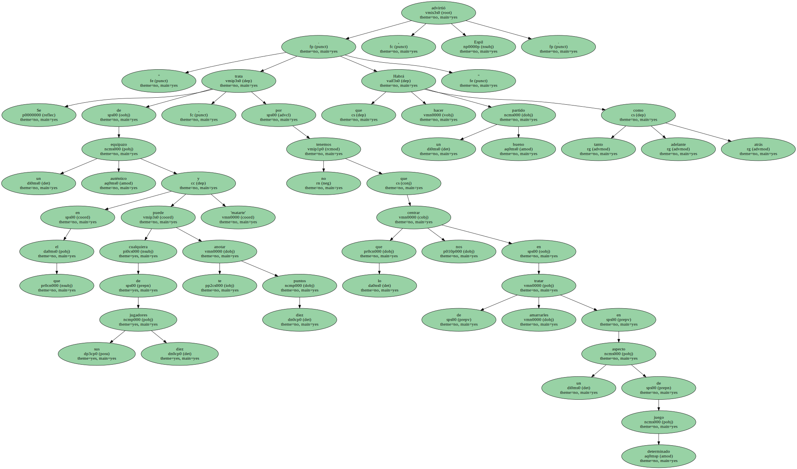
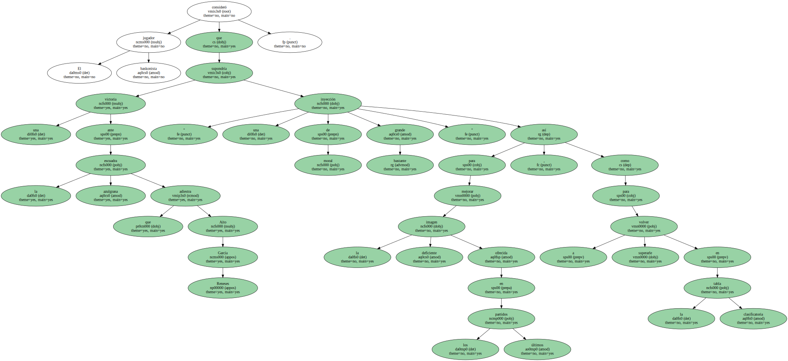
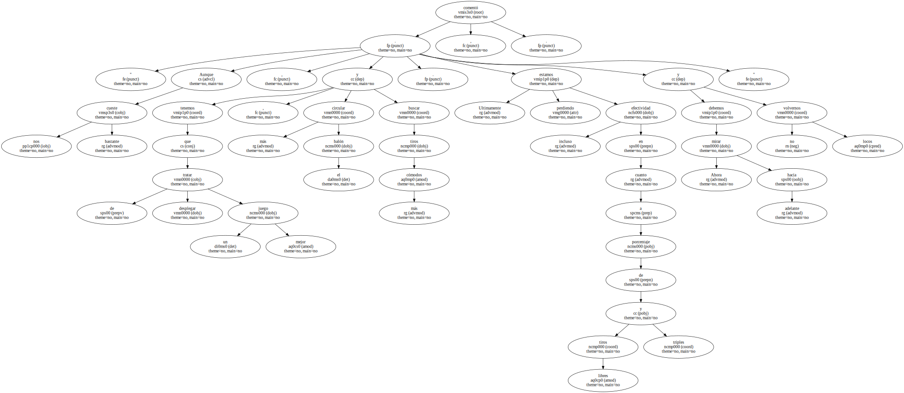
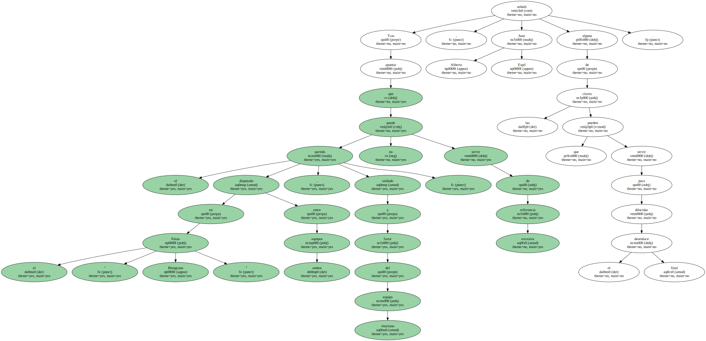
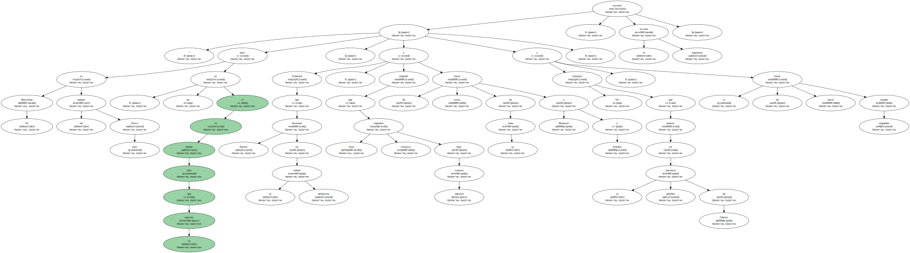
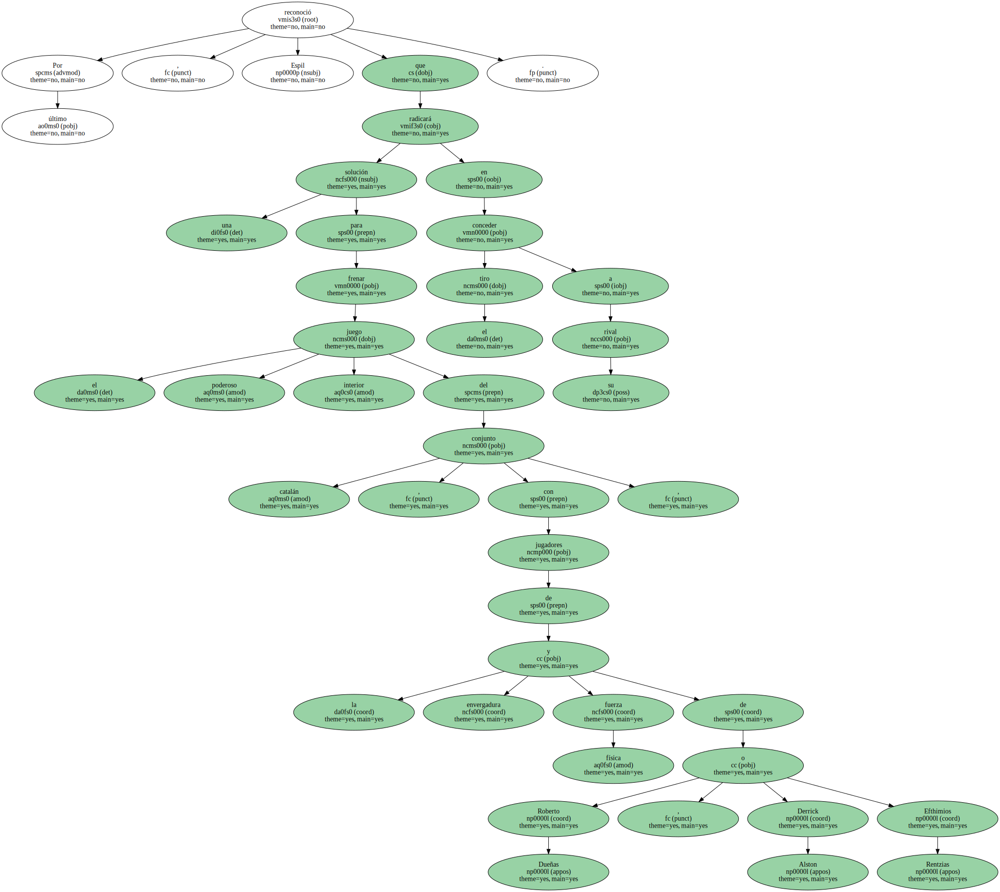
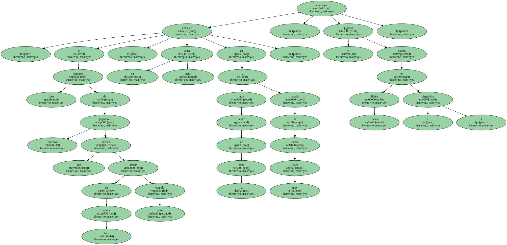

El ítalo-argentino Juan Alberto Espil , escolta del Tau Cerámica , se deshizo hoy en elogios de su rival del próximo sábado , el FC Barcelona , al cuál no dudó en calificar como " el mejor equipo y la mejor plantilla " de las dieciocho que conforman en la actualidad la liga ACB.

" Se trata de un auténtico equipazo en el que cualquiera de sus diez jugadores te puede anotar diez puntos y 'matarte' , por lo que no nos tenemos que centrar en tratar de amarrarles en un aspecto de juego determinado . Habrá que hacer un partido bueno tanto adelante como atrás " , advirtió Espil.
El jugador baskonista consideró que una victoria ante la escuadra azulgrana que adiestra Aíto García Reneses supondría " una inyección de moral bastante grande " para mejorar la deficiente imagen ofrecida en los últimos partidos , así como para volver a superarle en la tabla clasificatoria.
" Aunque nos cueste bastante , tenemos que tratar de desplegar un mejor juego , circular más el balón y buscar tiros más cómodos . Ultimamente estamos perdiendo incluso efectividad en cuanto a porcentaje de tiros libres y triples . Ahora debemos mirar hacia adelante y no volvernos locos " , comentó.
Tras apuntar que el partido disputado en el " Palau Blaugrana " entre ambos equipos , saldado a favor del equipo vitoriano , no puede servir de excesiva referencia , Juan Alberto Espil señaló alguna de las claves que pueden servir para dilucidar el desenlace final.
" El Barcelona es un equipo muy físico , pero no sé si es más rápido que el nuestro . Tenemos que hacernos fuertes en el rebote defensivo , impedir que ellos capturen rechaces bajo nuestra canasta y tratar de sacar de la zona a Rentzias y Dueñas . No tenemos que pensar en la posible ausencia de Oberto , y sí tratar de hacer segundas ayudas " , aseveró el escolta argentino.
Por último , Espil reconoció que una solución para frenar el poderoso juego interior del conjunto catalán , con jugadores de la envergadura y fuerza física de Roberto Dueñas , Derrick Alston o Efthimios Rentzias , radicará en conceder el tiro a su rival.
" Si bien disponen de muchos jugadores que pueden anotar de tres puntos estando solos , su mejor arma consiste en jugar dentro de la zona y hacerlo de forma muy física " , concluyó el jugador nacido en Bahía Blanca ( Argentina ).
